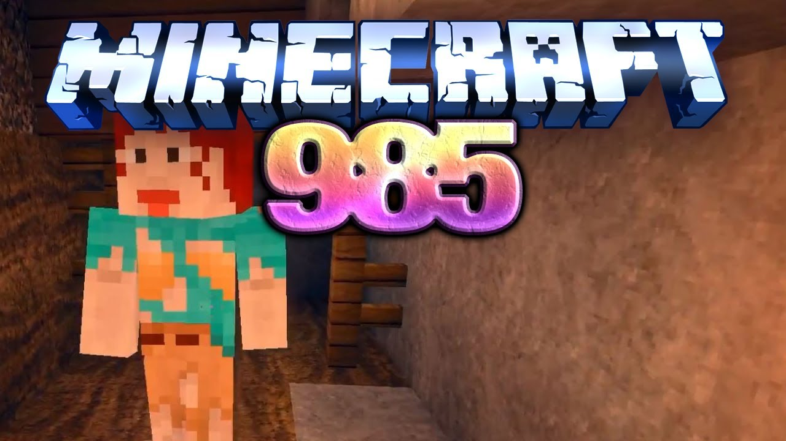

How to Play Minecraft with Friends: Multiplayer Tips and Tricks
By: Zoe
Introduction
Are you tired of playing Minecraft alone? Do you want to experience the game with your friends? Look no further, as we provide you with the ultimate guide to multiplayer gaming in Minecraft!
As the game gains popularity, players are eager to experience Minecraft with friends. But it's not always as easy as it seems. Playing with other people requires a different set of skills and strategies than playing alone. Our website provides you with all the necessary information to make the multiplayer experience a memorable one.
We offer tips on how to create your own server, how to join or rent one, and how to troubleshoot common issues. Our step-by-step guides are designed to be user-friendly, so even beginners can understand them.
Not only do we provide you with technical advice, but we also share strategies for team play. We'll guide you on collaborative building, resource gathering, and combat. We'll also provide insights on how to communicate efficiently with your team and maintain friendly relations.
Furthermore, we keep you updated on the latest developments in the multiplayer arena. Our blogs and reviews on mods, skins, and maps help you enhance your gaming experience.
So why play alone, when you can conquer the game with your friends? Explore our website for the ultimate Minecraft multiplayer experience.
ad space
Setting Up a Minecraft Server
As an avid Minecraft player, nothing beats the excitement of building, exploring, and surviving with friends. While playing alone can be fun, sharing the experience with your closest allies in the game can take your Minecraft journey to a new level. However, finding the right server to join can be a daunting task, especially when you have specific gameplay preferences that no public servers can meet. That is why setting up your own Minecraft server is the ultimate solution for playing with friends.
Setting up a Minecraft server may sound intimidating, but with the right guide, it can be a fun and straightforward process. In this article, we’ll provide you with essential tips and tricks for setting up your Minecraft server so you can start playing with your amigos.
First of all, you need to determine the type of server you want to set up. There are two types of Minecraft servers: Vanilla and Modded. Vanilla servers are the classic Minecraft servers that offer vanilla gameplay with no mods or plugins. On the other hand, modded servers offer custom gameplay with mods, plugins, and texture packs.
Once you’ve decided on the type of server you want to set up, you need to download the Minecraft server software from the official website. The software is free and easy to download. You can then configure the server settings to your liking, such as the maximum number of players, game mode, and world seed.
After configuring the server settings, you can then invite your friends to join your server by sharing the server IP address with them. They can then connect to your server by adding the IP address to their Minecraft client.
Setting up a Minecraft server is a fun and rewarding experience that allows you to play with your friends on your terms. With these tips and tricks, you’ll be able to set up your server in no time and enjoy hours of Minecraft gameplay with your buddies.
ad space
Joining an Existing Server
Welcome to the exciting world of Minecraft! If you're here, you're likely looking for ways to enjoy this world-building game with your friends – and we've got you covered. In this article, we'll be discussing how to join an existing server on Minecraft – the perfect starting point for multiplayer gameplay.
But first, why play Minecraft with friends? Well, for starters, it's much more enjoyable than playing alone. You can explore the vast open world, create amazing structures, and complete challenging tasks – all while having fun with your friends. Secondly, Minecraft is a game that thrives on collaboration. With multiple players, you can divide tasks, share resources, and strategize to achieve bigger goals.
So, how do you join an existing server? First, you need to find an active server that you want to join. One way to do this is to ask your friends if they're already playing on a server. Alternatively, you can search online for Minecraft server directories that list active servers. Once you've found a server that interests you, you'll need to obtain the server IP address. This can be found on the server's website or by asking the server owner directly.
Next, launch Minecraft on your computer and click on the “Multiplayer” option. Here, you will see a screen with a list of servers. Click the “Add Server” button, and input the server IP address. Once you've added the server, click “Join Server” and you'll be transported to a multiplayer world.
Overall, joining an existing server is a simple process that opens up a whole world of multiplayer gameplay. You'll be able to collaborate with your friends, engage in exciting challenges and create memorable moments together. So, what are you waiting for? Get started on your Minecraft multiplayer journey today!
ad space
Playing Minecraft with LAN
Looking for ways to enhance your Minecraft gameplay experience? Playing with friends is undoubtedly one of the best ways to add an extra layer of excitement to the game, and LAN (Local Area Network) multiplayer is a great way to get started. Whether you're hosting your own server or joining someone else's, LAN allows you to connect with other players on the same network and enjoy Minecraft together without the need for an internet connection.
One of the biggest advantages of LAN multiplayer is that you can easily communicate with your friends during the game. This is especially important when working together on complex builds or challenging battles. Also, in contrast to internet play, LAN multiplayer is fast and reliable, with almost zero lag or latency issues. This means that you can enjoy a smooth gameplay experience without any annoying interruptions or delays.
To get started with LAN multiplayer, you'll need to make sure that all the players are connected to the same Wi-Fi network. Once you're all connected, launch Minecraft and navigate to the "Multiplayer" option on the main menu. From there, you can either create your own LAN server or join someone else's by entering their IP address.
One tip to enhance your LAN gameplay experience is to consider using mods. These can add new features, items, or gameplay mechanics to the game, making it more exciting and immersive. Some of the most popular Minecraft mods include OptiFine, which improves graphics and performance, and Pixelmon, which adds Pokémon-style creatures to the game.
In conclusion, if you're looking for a fun and engaging way to play Minecraft with friends, LAN multiplayer is a great option. With its fast and reliable connectivity, easy communication, and the potential to use mods, you can take your game to new heights and enjoy Minecraft in a whole new way.
ad space
Using Third-Party Tools
Minecraft is one of the most popular games in the world, and for good reason. Its endless possibilities for creative gameplay and exploration have captivated millions of gamers worldwide. However, Minecraft is even better when played with friends. That's where multiplayer comes in, and there are plenty of ways to play Minecraft with others, using third-party tools like servers and mods.
In this section, we'll explore the ins and outs of using third-party tools to play Minecraft with friends. Whether you're new to Minecraft multiplayer or a seasoned veteran, we've got you covered. We'll go over what these tools are, how to set them up, and how to use them to play with your friends.
First, let's talk about servers. A Minecraft server is a computer that hosts the Minecraft game world, allowing players to connect and play together. There are many different types of servers, from public ones that anyone can join to private ones that require an invitation. We'll delve into how to create your own server, as well as how to find and join other servers.
Next, we'll look at mods, which are customizations to the Minecraft game that change its gameplay, visuals, or other aspects. Mods are a great way to spice up your Minecraft experience and play with your friends in new and exciting ways. We'll discuss some popular mods, how to install them, and how to use them in multiplayer.
Finally, we'll touch on some other tools that can enhance your multiplayer experience, such as voice chat programs and daemons. These tools can help you communicate better with your friends or make your server run more smoothly.
By the end of this section, you'll have all the knowledge you need to take your Minecraft multiplayer game to the next level using third-party tools. So grab some friends, fire up your Minecraft client, and get ready to have some fun!
ad space
Conclusion
As you approach the end of this guide on how to play Minecraft with friends, it's time to take a moment and reflect on what you've learned. Throughout this website, we've explored a vast array of multiplayer tips and tricks to help you get the most out of your Minecraft experience.
Whether you're a seasoned veteran or a newcomer to the game, we've provided practical and easy-to-follow advice on how to set up and play Minecraft with your friends. From creating your own server to exploring popular third-party options, we've shown you how to connect with other players and maximize your gaming experience.
But our guide goes beyond the technical aspects of multiplayer Minecraft. We've shared stories of adventures and misadventures, from building towering structures to fighting off zombie hordes. We've shown you how to work as a team, communicate effectively, and make the most of your collective skills.
At the heart of our guide is the idea that Minecraft is not just a game, but a community. With millions of players around the world, the possibilities for collaboration and creativity are limitless. And as you've learned, there are countless ways to connect with others and participate in this thriving community.
So as you wrap up this guide on how to play Minecraft with friends, we hope that you feel inspired to continue exploring, building, and creating. Whether you're playing with friends or making new ones, there's always something new to discover in the world of Minecraft. So go forth and adventure, and may your blocks always have good luck!
ad space